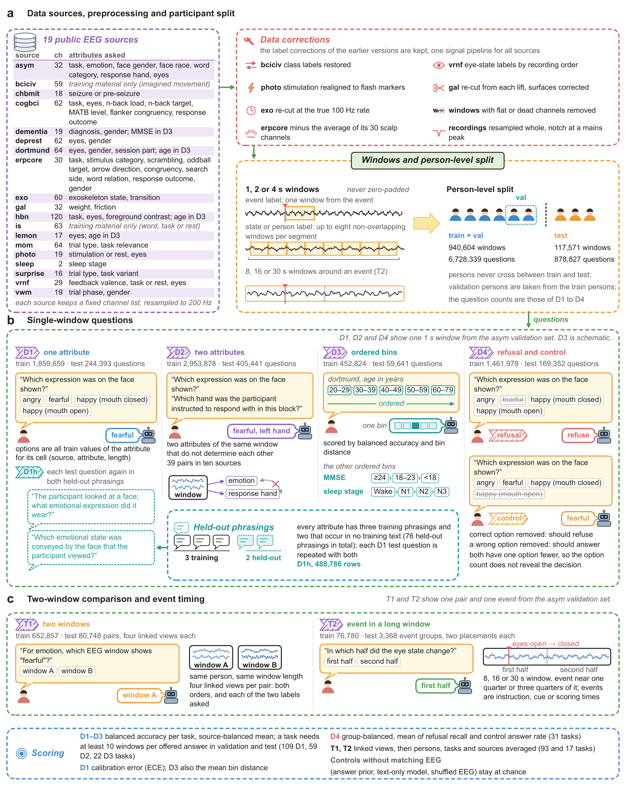

Read the EEG
A CBraMod encoder supplies EEG features. The model can combine them across two windows or across blocks of a longer window.
EEGJev uses the question and offered answers to decide what to read from the EEG. EEGJev-Bench measures whether that decision follows the question and when a model should decline.
Balanced accuracy
All comparisonsEEGJev-Bench v1.3
Compare scores on the same test tasks. Each source contributes equally to a score.
EEGJevBaseline
Scores are from Fig. 4 of the paper. Each row reports its own matched task set; the difference is EEGJev minus the baseline in percentage points.
The benchmark
EEGJev-Bench covers attributes, comparisons, event timing, and decisions about when to decline.

The model
EEGJev scores all offered answers in a single pass through the decision head. Each choice receives a score that the application can use directly.

A CBraMod encoder supplies EEG features. The model can combine them across two windows or across blocks of a longer window.
Frozen MPNet encodes the question and candidate labels for the shared decision head.
The decision head scores candidates. A separate head estimates whether the offered set contains a valid answer for refusal questions.
Test participants are held out from v1.3 training. Scores weight the contributing sources equally.
Each pairwise comparison uses the tasks that both models cover. The score depends on the question type.
Compare two recorded windows or change the question on one fixed window. The demonstration shows saved model outputs.
Loading the saved validation examples…
EEGJev-Bench validation · Shared EEGJev, seed 0 · Four of 32 standardized EEG channels at 200 Hz. EEG-Asymmetries dataset
Scoring
Select a question type and see how your choices are scored.
D1
109 scored tasks across 17 sources
D2
59 scored tasks across 10 sources
D3
22 scored tasks across 6 sources
D4
31 scored tasks across 11 sources
T1
93 scored tasks across 16 sources
T2
17 scored tasks across 8 sources
Decision reliability
Keep the EEG window fixed and change the question, the order of the options, or which options are available.
Which expression was on the face shown?
The EEG window and all six options stay fixed.
Choose an option, then switch the question to try the same list again.
Illustrative example based on the labels shown in Fig. 2.
Which hand was the participant instructed to respond with in this block?
Left hand is option 1.
The highlighted answer follows its label. Its position can change.
Illustrative example. The EEG, question and answer labels stay fixed.
Which expression was on the face shown?
Both versions share the same EEG window and have three options. Choose a response for each.
“Fearful” was removed from the options.
“Happy (mouth open)” was removed from the options.
Pair from Fig. 2. Declining is a separate response in both versions.